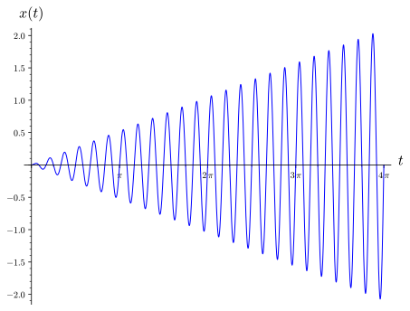
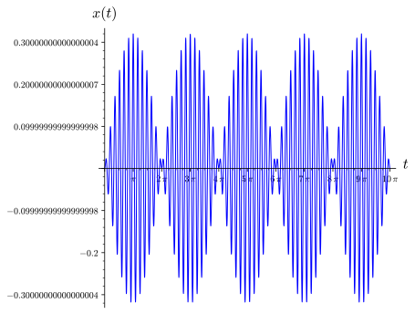
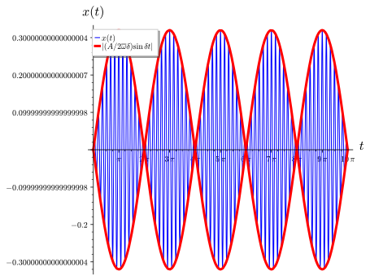
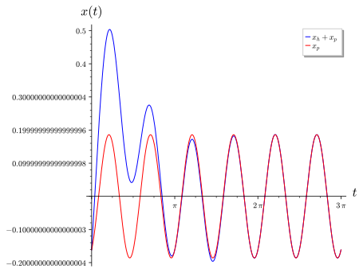

To understand how the natural frequency, \(omega_0\text{,}\) interacts with the frequency of the forcing term, \(\omega\) in an undamped harmonic oscillator
\begin{equation*}
x'' + \omega_0^2 x = A \cos \omega t.
\end{equation*}
If the two frequencies are the same, we can observe a phenomenon called resonance. If the two frequencies are close, we can observe a phenomenon called beats.
To understand that the gain (or frequency response) \(G(\omega)\) of a forced damped harmonic oscillator,
\begin{equation*}
x'' + 2c x' + \omega_0^2 x = A \cos \omega t
\end{equation*}
is defined as the absolute value of the ratio of the output amplitude to the steady-state input amplitude and that the amplitude and phase of the steady-state solution is given by
\begin{equation*}
x_p(t) = G(\omega) A \cos(\omega t - \phi).
\end{equation*}
Resonance happens when the natural frequency and the forcing frequency of an undamped harmonic oscillator are the same. There are many real world examples of resonance. For example, it is possible for a trained singer to shatter a champagne glass by simply singing the correct note (see www.youtube.com/watch?v=IZD8ffPwXRo). Shattering a glass by singing the correct note can be modeled by an equation of an undamped harmonic oscillator with sinusoidal forcing. While a certain amount of damping occurs in all physical systems, the damping is often so small that it makes sense to use an undamped harmonic oscillator.
Subsection4.4.1Resonance
Resonance was responsible for the collapse of the Broughton suspension bridge near Manchester, England in 1831. The collapse occurred when a column of soldiers marched in cadence over the bridge, setting up a periodic force of rather large amplitude. The frequency of the force was approximately equal to the natural frequency of the bridge. Thus, the bridge collapsed when large oscillations occurred. For this reason soldiers are ordered to break cadence whenever they cross a bridge.
The Millennium Bridge, the first new bridge to span the Thames River in London in over 100 years, is a modern example of how resonance can effect a bridge (Figure 4.4.1). This pedestrian bridge, which opened to the public in June 2000, was quickly closed after the bridge experienced high amplitude horizontal oscillations during periods of high traffic. Studies by designers found that the bridge experienced high amplitude horizontal oscillations in response to horizontal forcing at a rate of one cycle per second. Typically, people walk at a rate of two steps per second, so the time between two successive steps of the left foot is about one second. Thus, if people were to walk in cadence, they could set up strong horizontal forcing that would place a destructive load on the bridge. The engineers did not envision this to be a problem since tourists do not generally march in time. However, a video of tourists crossing the bridge revealed the opposite. When the bridge began oscillating, people tended to walk in cadence in order to keep their balance (www.youtube.com/watch?v=gQK21572oSU).
Figure4.4.1.The Millennium Bridge
Consider the case of an undamped harmonic oscillator with a sinusoidal forcing function. We know that we can model this situation with the second-order linear differential equation
\begin{equation*}
x'' + \omega_0^2 x = A \cos \omega t.
\end{equation*}
Since the homogeneous solution to this equation is
we can see that the natural frequency of the harmonic oscillator is \(\omega_0\text{.}\) This is the frequency of the oscillations if there is no forcing term. Depending on whether or not the frequency of the forcing term \(\omega\) is equal to the natural frequency, we will have two very different situations. If the two frequencies are equal, then they will re-enforce one another and we will have resonance. If the two frequencies are close but not equal, we will see the phenomenon of beats. We wish to investigate what happens when the driving frequency \(\omega\) is equal to the natural frequency and when it is not.
Let us examine the case where the forcing frequency and the natural frequency of the oscillator are the same,
\begin{equation}
x'' + \omega_0^2 x = A \cos \omega_0 t.\tag{4.4.1}
\end{equation}
Since \(A \cos \omega_0 t\) is a solution to the homogeneous equation \(x'' + \omega_0^2 x = 0\text{,}\) we cannot assume that a particular solution to equation (4.4.1) has the form \(a \cos \omega_0 t + b \sin \omega_0 t\text{.}\) Equivalently, if we use the complex method, we cannot assume that our solution has the form \(ae^{i \omega_0t}\text{.}\) Therefore, we will look for a complex solution of the form
\begin{equation*}
x_c = a t e^{i \omega_0 t}
\end{equation*}
for the complex equation that corresponds to (4.4.1),
\begin{equation}
x'' + \omega_0^2 x = A e^{i \omega_0 t}.\tag{4.4.2}
\end{equation}
In this case,
\begin{align*}
x_c' & = a ( 1 + i \omega_0 t )e^{i \omega_0 t} \\
x_c'' & = a (2 i \omega_0 - \omega_0^2 t) e^{i \omega_0 t}.
\end{align*}
Substituting \(x_c\) and \(x_c''\) into the left-hand side of (4.4.2), we have
\begin{align*}
x_c'' + \omega_0^2 x_c & = a (2 i \omega_0 - \omega_0^2 t )e^{i \omega_0 t} + \omega_0^2 a t e^{i \omega_0 t}\\
& = 2ai \omega_0 e^{i \omega t}.
\end{align*}
In order for \(x_c = a t e^{i \omega_0 t}\) to be a solution to (4.4.2), we must have
\begin{equation*}
a = \frac{A}{2 i \omega_0}.
\end{equation*}
Thus, our solution to the complex form of the differential equation is
\begin{align*}
x_c & = \frac{A}{2i \omega_0} t e^{i \omega_0 t}\\
& = - \frac{Ai}{2 \omega_0} t e^{i \omega_0 t}\\
& = - \frac{Ai}{2 \omega_0} t (\cos \omega_0 t + i \sin \omega_0 t)\\
& = \frac{A}{2 \omega_0} t \sin \omega_0 t - i \frac{A}{2 \omega_0} t \cos \omega_0 t.
\end{align*}
The real part of \(x_c\text{,}\)
\begin{equation*}
x_p(t) = \frac{A}{2 \omega_0} t \sin \omega_0 t,
\end{equation*}
is a particular solution to (4.4.1). Thus, our general solution is
\begin{equation*}
x(t) = x_h(t) + x_p(t) = c_1 \cos \omega_0 t + c_2 \sin \omega_0 t + \frac{A}{2 \omega_0} t \sin \omega_0 t.
\end{equation*}
To find a particular solution to \(x'' + 144 x = 4 \cos 12t\text{,}\) we will use the complex method and try to find a particular solution to \(x'' + 144 x = 4 e^{12it}\text{.}\) We must assume that the solution has the form \(x_c(t) = a t e^{12it}\text{,}\) since \(a e^{12it}\) is a solution to the homogeneous equation. As before, we have \(x_c'' = a (24i - 144 t) e^{12it}\text{.}\) If we substitute \(x_c\) and \(x_c''\) into the left-hand side of our differential equation, we have
\begin{equation*}
x_c'' + 144 x_c = a (24i - 144 t) e^{12it} + 144 a t e^{12i t} = 24ai e^{12i t}.
\end{equation*}
Therefore,
\begin{equation*}
a = \frac{4}{24i} = - \frac{1}{6}i,
\end{equation*}
and our complex solution is
\begin{equation*}
- \frac{1}{6} i t e^{12it} = - \frac{1}{6} i t (\cos 12t + i \sin 12 t) = \frac{1}{6} t \sin 12 t - \frac{1}{6} i t \cos 12 t.
\end{equation*}
Taking the real part of our complex solution, we have a particular solution
\begin{equation*}
x_p(t) = \frac{1}{6} t \sin 12t.
\end{equation*}
Thus, the general solution to \(x'' + 144 x = 4 \cos 12t\) is
Applying the initial conditions, both \(c_1 = 0\) and \(c_2 = 0\text{.}\) Consequently, the solution to the initial value problem is
\begin{equation*}
x(t) = \frac{1}{6} t \sin 12t.
\end{equation*}
The graph of this solution is given in Figure 4.4.3. Notice that our solution grows with time. This growth is due to the fact that the frequency of the forcing term is equal to the natural frequency of the oscillator. Since the force pulls and pushes at a frequency equal to the natural frequency of the oscillator, the amplitude increases with time. This type of behavior is called resonance.

Figure4.4.3.The solution to \(x'' + 4 x = 4 \sin 2t\text{,}\)\(x(0) = 0\text{,}\)\(x'(0) = 0\text{.}\)
Activity4.4.1.Resonance.
Solve each of the following initial value problems and plot the solution for \(t \geq 0\text{.}\) In each case, what is the natural (and forcing) frequency of the harmonic oscillator?
Subsection4.4.2Beats or the Case \(\omega \neq \omega_0\)
If the forcing frequency and natural frequency are not equal but close, then we have the phenomenon of beats. For example, a piano tuner uses this phenomenon to make certain that a particular string is correctly tuned. The tuner will strike a tuning fork which vibrates at the correct frequency. Next, the tuner hits the poorly tuned piano string. This modulation gives rise to beats in the tone that are readily audible. When the string is properly tuned, the beats will go away. To see another example of beats, watch the video www.youtube.com/watch?v=pRpN9uLiouI.
To understand the situation where the forcing and natural frequencies differ by a small amount, \(\omega \neq \omega_0\text{,}\) we will first consider the equation,
\begin{equation}
x'' + \omega_0^2 x = A \cos \omega t.\tag{4.4.3}
\end{equation}
The solution to the homogeneous equation \(x'' + \omega_0^2 x = 0\) is
\begin{equation*}
x_h(t) = c_1 \cos \omega_0 t + c_2 \sin \omega_0 t.
\end{equation*}
Since the forcing frequency is not equal to the natural frequency, we can look for a particular solution to the complex of the form of equation (4.4.3),
\begin{equation}
x'' + \omega_0^2 = A e^{i \omega t}.\tag{4.4.4}
\end{equation}
If we assume that our solution has the form \(x_c = a e^{i\omega t}\) and substitute \(x_c\) into the left-hand side of (4.4.4), we find
\begin{equation*}
x(t) = x_h(t) + x_p(t) = c_1 \cos \omega_0 t + c_2 \sin \omega_0 t + \frac{A}{\omega_0^2 - \omega^2} \cos \omega t.
\end{equation*}
Now let us examine the case where the motion starts at equilibrium. That is, we will investigate what happens when \(x(0) = 0\) and \(x'(0) = 0\text{.}\) In this case, we can easily determine that \(c_1 = -A/(\omega_0^2 - \omega^2)\) and \(c_2 = 0\text{.}\) Hence the solution to our initial value problem is
Thus, we have a sine function, \(\sin \overline{\omega} t\) whose amplitude varies according to \(|(A/2 \overline{\omega} \delta) \sin \delta t|\text{,}\) and
The graph of this solution is given in Figure 4.4.5 and illustrate the phenomenon of beats. The two frequencies are almost equal and interfere with each other.

Figure4.4.5.Solution to the initial value problem (4.4.7)
In our example, \(\delta = -1/2\) and \(\overline{\omega} = 25/2\text{.}\) The factor \(\sin \delta t = \sin( - t/2)\) in (4.4.6) oscillates very slowly in comparison to \(\sin(\overline{\omega}) = \sin(25t/2)\text{.}\) Thus, we can view the solution (4.4.6) as a fast oscillation with a frequency \(\overline{\omega}\) and amplitude
which oscillates much more slowly. If we superimpose the graph of (4.4.10) onto the graph in Figure 4.4.5, we obtain an envelope of the faster oscillation.

Figure4.4.6.Envelope for the initial value problem (4.4.7)
Solve the initial value problem and plot its solution.
(b)
Calculate the mean frequency, \(\overline{\omega} = (\omega_0 + \omega)/2\text{,}\) and the half difference, \(\delta = (\omega_0 - \omega)/2\text{,}\) where \(\omega_ 0\) is the natural frequency and \(\omega\) is the forcing frequency and rewrite the solution to the initial value problem in the form (4.4.6).
(c)
Plot the envelope, \(|(A \sin \delta t)/(2 \overline{\omega} \delta)|\text{,}\) over the plot of the solution to the initial value problem.
(d)
Discuss what is going on in this activity.
Subsection4.4.3Forced Damped Harmonic Motion
Since perpetual motion does not really exist, we should consider what happens when we add some damping to our harmonic oscillator,
\begin{equation}
x'' + 2c x' + \omega_0^2 x = A \cos \omega t.\tag{4.4.11}
\end{equation}
It is easy to see that all solutions approach \(x_p(t)\) as \(t \to \infty\) no matter what the initial conditions may be. However, it would be much more useful if we would write the particular solution in the form
\begin{equation*}
x_p(t) = K \cos(4 t - \phi )
\end{equation*}
for some constants \(K\) and \(\phi\) rather than a linear combination of \(\cos 4t\) and \(\sin 4t\text{.}\)
Returning to the general case, the associated homogeneous equation for (4.4.11) is
As in Example 4.4.7, we will look for a particular solution to (4.4.11) by examining the equivalent complex differential equation. That is, we shall look for a solution of the form \(x_c = a e^{i \omega t}\) to the equation
\begin{equation}
x_c(t) = H(i \omega) A e^{i \omega t} = G(\omega) A e^{i(\omega t - \phi)}.\tag{4.4.17}
\end{equation}
Taking the real part of (4.4.17), our particular solution is
\begin{equation*}
x_p(t) = \real(x_c(t)) = G(\omega) A \cos(\omega t - \phi ).
\end{equation*}
It is now clear that particular solution has the same frequency as the forcing term. In addition, \(x_p\) is out of phase with the driving force by the amount
Since \(x_h\) has the factor \(e^{-ct}\text{,}\) the homogeneous part of the solution quickly decays to zero as \(t \to \infty\text{.}\) For this reason, \(x_h\) is called the transient term while \(x_p\) is called the steady-state term.
Let us examine the steady-state solution of the harmonic oscillator in Example 4.4.7. We have already determined that the second-order linear differential equation
The natural frequency is \(\omega_0 = \sqrt{2} \approx 1.4142\) If we choose the initial conditions so that \(c_1 = 0\) and \(c_2 = 1\text{,}\) our transient term is
\begin{equation*}
x_h(t) = e^{-ct} \sin \beta t = e^{-t} \sin t.
\end{equation*}
Since \(c = 1\text{,}\)\(\omega = 4\text{,}\) and \(A = 3\text{,}\) the gain is \(G(4) \approx 0.0620\text{,}\) the amplitude of the steady state solution is \(G(4) \cdot 4 \approx 0.2481\text{.}\) The phase is \(\phi = \phi(4) \approx 2.6224.\) The solution and the steady-state solution are given in Figure 4.4.9. As we can see, transient solutions can be quite large when compared to steady-state solutions.

Figure4.4.9.A forced damped harmonic oscillator and the steady-state solution.
Large transient currents can be destructive in electrical circuits. For example, a light bulb usually burns out when a large transient flows through an already weakened bulb. This, usually occurs at the time the light bulb is turned out or turned off. Large transient currents are particularly harmful to the hard drive in a computer. For this reason, computers should be left on except in the case that they are not being used for a period of several days.
Subsection4.4.4Important Lessons
A forced damped harmonic oscillator,
\begin{equation*}
x'' + 2c x' + \omega_0^2 x = A \cos \omega t
\end{equation*}
where \(\omega = s \omega_0\) and \(D = 2c/\omega_0\text{.}\)
In an undamped harmonic oscillators with a sinusoidal forcing term, the natural frequency of the solution interacts with the frequency of the forcing term. As the frequency of the forcing term approaches the natural frequency of the equation, we can observe a phenomenon called resonance. We can use the equation
\begin{equation*}
x'' + \omega_0^2 x = A \cos \omega t
\end{equation*}
to model an undamped harmonic oscillator with sinusoidal forcing.
If the driving frequency is not equal to the natural frequency (\(\omega \neq \omega_0\)), we have a particular solution
For each of the functions in Exercise Group 4.4.6.7–10 compute the envelope function. Then plot \(y(t)\) and the envelope function on the same set of axes.
7.
\(y = \cos 10 t - \cos 11t\text{.}\)
8.
\(y = \cos 11 t - \cos 12t\text{.}\)
9.
\(y = \sin 11 t - \sin 10t\text{.}\)
10.
\(y = \sin 12 t - \sin 11t\text{.}\)
11.
Consider the function \(y = \cos 10 t - \cos 11t\text{.}\)
Find the mean frequency \(\overline{\omega} = (\omega_0 + \omega)/2\) and half difference \(\delta = (\omega_0 - \omega)/2\text{.}\)
Use (a) to show that
\begin{equation*}
y = \cos 10 t - \cos 11t = 2 \sin\left( \frac{1}{2} t \right) \sin(\left( \frac{21}{2} t \right).
\end{equation*}
You will find the following trigonmetric identity very useful,
\begin{equation*}
2 \sin A \sin B = \cos(A - B) - \cos(A + B).
\end{equation*}
Using (b), plot the graph of \(y\) and \(2 \sin(t/2)\) on the same axes.
For fixed \(p\) and \(q\text{,}\) let \(M(p, q)\) denote the maximum value of \(A( \omega, p, q)\) as a function of \(\omega\text{.}\) Compute an expression for \(M(p, q)\text{.}\)
Set \(q = 1\) and plot \(M(p, q)\) as a function of \(p\text{.}\)
Explain why \(M(p, q)\) is proportional to \(1/p\) as \(p \to 0\text{.}\)
13.
Let us examine the amplitude and phase of the steady-state solution,
\begin{equation*}
x_p(t) = G(\omega) A \cos(\omega t - \phi),
\end{equation*}
Now let \(s = \omega / \omega_0\) and \(D = 2c/\omega_0\text{.}\) These new constants, \(s\) and \(D\text{,}\) measure the ratio of the driving frequency to the natural frequency and the effect of the damping force, respectively. Thus,
\begin{equation*}
G = \frac{1}{\omega_0^2\sqrt{(1- s^2)^2 + D^2 s^2}}
\end{equation*}